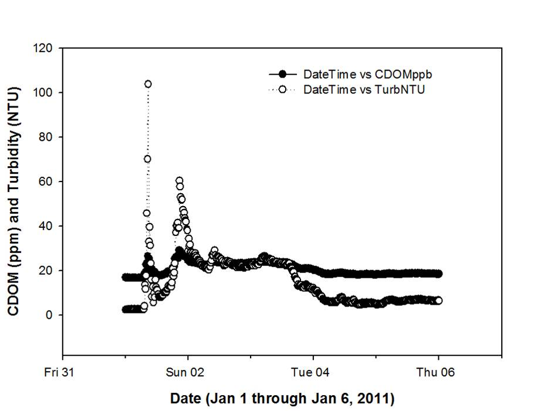
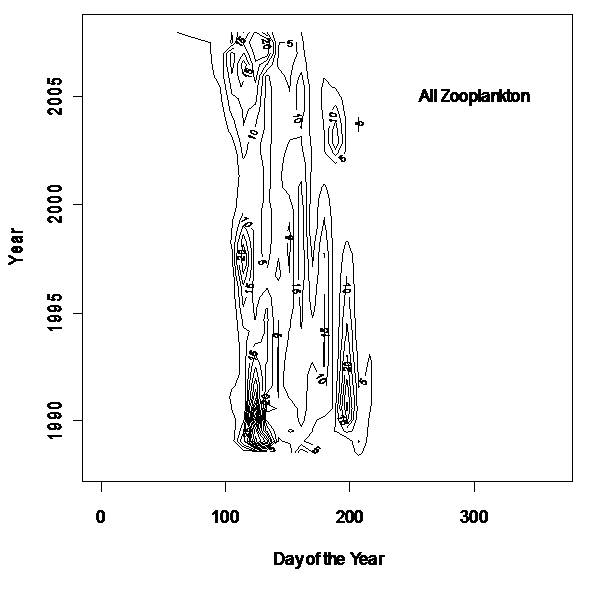

Real-Time Continuous Observations from Sensors
and Long-Term Monitoring of Water Quality Allow Increased Understanding of Biological
and Hydrological Processes in a Reservoir, Kentucky Lake (USA).
Susan Hendricks, Todd Levine, and David White
Hancock Biological Station, Murray State University
561 Emma Drive, Murray, KY, 42071
Phone: (270) 474-2272
Kentucky Lake (USA), impounded in 1942, is the largest man-made reservoir east of the Mississippi River and one of more than 40 TVA impoundments in the Tennessee River system. The reservoir is 260 km long and 1.6 km wide with a water retention time of 23 days under normal water management conditions. The Hancock Biological Station and Center for Reservoir Research began a long-term monitoring program on Kentucky Lake in 1988. Fourteen to 17 sites are sampled every 16 days (32 in winter) for a variety of physicochemical and biological parameters. Two subwatershed streams, one agricultural and one forested, are sampled every 32 days. Nearly 450 monitoring cruises have been completed to date. The data have been valuable in understanding annual and long-term chemical and biological patterns; however, many short-term events are missed. To address this problem, a real-time (15-min sampling interval) monitoring station was established at a mid-lake navigation pylon in 2005. The combination of long-term and real-time monitoring has already provided a wealth of information on the reservoir resulting in a number of publications. Real-time data are openly available on the Station’s website at www.murraystate.edu/hbs. These and other data are being used in worldwide collaborations through the NSF supported Global Lake Ecological Observatory Network (GLEON). An NSF R2 collaboration (VOEIS) betweenContinuous, high-resolution water quality and meteorological data coupled with the long-term water quality monitoring program (16-day interval over 22 years) will be extremely valuable in helping us understand 1) solute and hydrological fluxes within Kentucky Lake, 2) the influence of contrasting land-use watersheds in the Tennessee River basin, and 3) spatial and temporal shifts in biological components. For example, the long-term monitoring of sulfate in Kentucky Lake has demonstrated a significant decrease in SO4 concentrations from over 23 mg/L in 1989 to less than 10 mg/L in 2010 (Figure 1) as well as long-term shifts in zooplankton phenology (Figure 4). Continuous high-resolution monitoring from buoy sensors has documented otherwise unobservable hydrologic and precipitation phenomena; for example, seiche activity occurred during Hurricane Ike in 2008 (Figure 2) and a 1.6 inch precipitation event on 01/01/2011 increased turbidity and CDOM entering the lake from the agriculturally impacted Ledbetter subwatershed (Figure 3).

Figure 3. Effects of Jan 1, 2011precipitation event (1.6") on turbidity and CDOM export from an agriculturally impacted subwatershed of Kentucky Lake.
